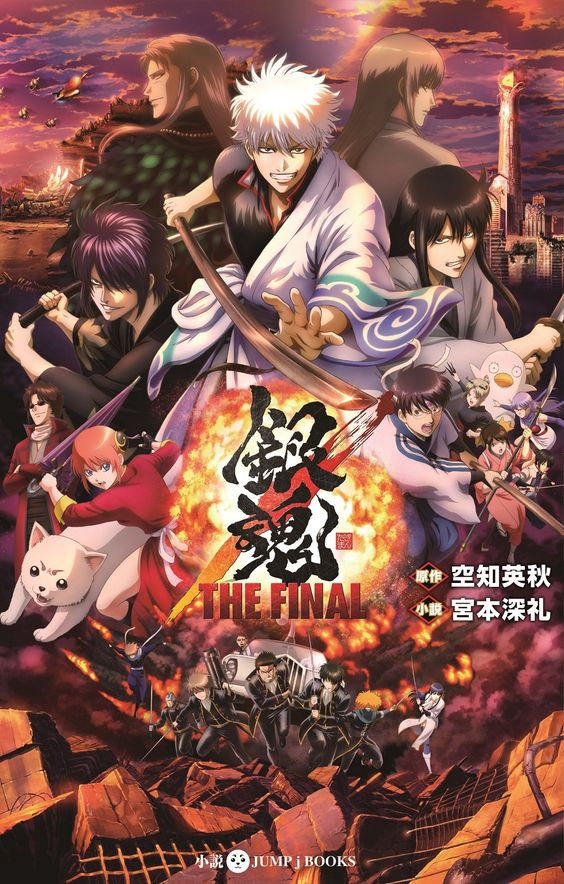
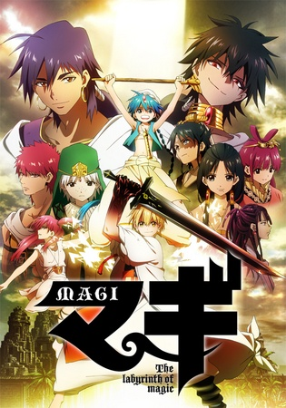
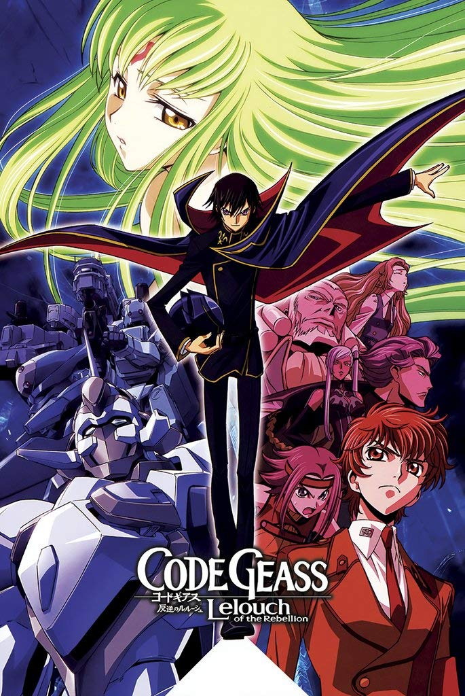

The story is set in an alternate-history late-Edo period, where humanity is attacked by aliens called "Amanto" (天人, "Sky People"). Edo Japan's samurai fight to defend Earth, but the shōgun cowardly surrenders when he realizes the aliens' power. He agrees to an unequal contract with the aliens, placing a ban on carrying swords in public and allowing the invaders to enter the country. The samurai's swords are confiscated and the Tokugawa bakufu (shogunate) becomes a puppet government.
The series focuses on an eccentric samurai, Gintoki Sakata who works as an odd-jobs freelancer. He helps a teenager named Shinpachi Shimura save his sister Tae from an alien group that wants to send her to a brothel. Impressed by Gintoki, Shinpachi becomes his freelance apprentice to pay the bills and learn more about the enigmatic samurai. When the pair rescues a teenage alien girl with super-strength, Kagura, from a Yakuza group, they accept her into their freelancing business and the three become known as "Yorozuya" (万事屋, "We do everything" or literally "The Anything Store").
The series focuses on Monkey D. Luffy—a young man made of rubber after unintentionally eating a Devil Fruit—who sets off on a journey from the East Blue Sea to find the deceased King of the Pirates Gol D. Roger's ultimate treasure known as the "One Piece", and takeover his prior title. In an effort to organize his own crew, the Straw Hat Pirates, Luffy rescues and befriends a pirate hunter and swordsman named Roronoa Zoro, and they head off in search of the titular treasure. They are joined in their journey by Nami, a money-obsessed thief and navigator; Usopp, a sniper and compulsive liar; and Sanji, an amorous but chivalrous cook. They acquire a ship, the Going Merry —later replaced by the Thousand Sunny—and engage in confrontations with notorious pirates of the East Blue. As Luffy and his crew set out on their adventures, others join the crew later in the series, including Tony Tony Chopper, an anthropomorphized reindeer doctor; Nico Robin, an archaeologist and former Baroque Works assassin; Franky, a cyborg shipwright; Brook, a skeleton musician and swordsman; and Jimbei, a whale shark-type fish-man and former member of the Seven Warlords of the Sea who becomes their helmsman. Together, they encounter other pirates, bounty hunters, criminal organizations, revolutionaries, secret agents, different types of scientists, soldiers of the morally-ambiguous World Government, and various other friends and foes, as they sail the seas in pursuit of their dreams.

Magi centers around Alibaba Saluja (a young man aiming to capture the nearby dungeon, Amon) and Aladdin (a traveler with a Djinn named Ugo in his flute). Witnessing the power of Aladdin's Djinn, Alibaba finds an opportunity to go dungeon diving with him. Aladdin and Alibaba eventually become friends, and conquer Amon together, despite facing Jamil and his slaves, Morgiana and Goltas. After a desperate fight, Aladdin and Alibaba assist Morgiana in breaking the mental chains that bind her to Jamil. Alibaba claims the dungeon while the Djinn Amon appears to briefly explain that Aladdin is a Magi and Alibaba is his king's candidate. However, they are interrupted by an outside force trying to close the dungeon off. Alibaba, Aladdin, and Morgiana escape the dungeon while Goltas resolves to die to atone for his sins along with Jamil, but not before cutting Morgiana's shackles. Aladdin ends up sent to a distant land, far from the others, where he learns he is a Magi. Having no news of his friend, Alibaba uses the treasure he obtained in Amon to free all slaves in the city, including Morgiana and returns to Balbadd, his homeland.
Lelouch (now going by the name Lelouch Lamperouge), is a popular yet withdrawn student at Ashford Academy. Lelouch becomes involved in a terrorist attack and finds a mysterious girl called C.C. (C2), who saves Lelouch's life from the Britannian Royal Guard, by making a contract with him and granting Lelouch a power known as Geass (ギアス, Giasu). This power, also known as the "Power of Kings" (王の力, Ō no Chikara), allows him to command anyone to do whatever he wants, including bending their will to live, fight, or die on his behalf. This power can affect an individual just once and only through direct eye contact. Lelouch decides to use his Geass to find his mother's murderers, destroy the Britannian Empire, and create a better world where Nunnally can live happily. In the process, Lelouch becomes Zero, a masked vigilante and the leader of the resistance movement known as The Black Knights, gaining popularity and support among the Japanese on his way towards the rebellion of Britannia. However, this does not come without a cost. Caught up in a conflict where he does not know the full extent of his powers, Lelouch will have to battle Suzaku, a resistance member named Kallen Stadtfeld, the strongest army in the world, his own half-siblings, and many others in a battle that will forever change the world.
